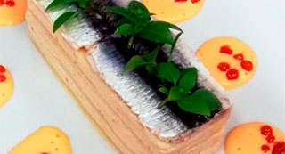

Lasaña fría de boquerones y anchoas. Mayonesa ligera de tomate y caviar de "Bloody Mary"
"Capas de pasta y "mousse" de anchoas con aspecto de postre y un guiño a la técnica de esferificación."

| Laminas de Lasaña | 4 un. |
 |
|
| Boquerones | 8 un. |
| Vinagre | 150 ml. |
| Aceite de oliva | 50 ml. |
| Agua mineral | 2 un. |
| Sal | 5 gr. |
|
|
| Anchoas en conserva | 1 lata. |
| Huevo | 1 un. |
| Aceite de girasol | 75 ml. |
| Diente de ajo | 1/4 un. |
| Hojas de gelatina | 1,5 un. |
| Nata montada | 200 gr. |
|
|
| Tomate maduro | 150 gr. |
| Diente de ajo | 1/2 un. |
| Huevo | 1 un. |
| Aceite de oliva | 75 ml. |
| Aceite de girasol | 25 ml. |
| Sal | 2 gr. |
|
|
| Zumo de tomate | 10 ml. |
| Vodka | 20 ml. |
| Perrins | 8 gotas |
| Tabasco | 4 gotas |
| Sal de apio | 1/2 cc. |
| Agar Agar | 1 gr. |
| Aceite de girasol | 200 ml. |
|
|
| Hojas albahaca mini | 4 un. |
- Hidratar las hojas de lasaña. Troquelar con el molde rectangular. Reservar envueltas en un paño húmedo.
- En primer lugar lavamos la anchoa con abundante agua fría.
- Una vez que esta esté limpia de sangre e impurezas, le quitamos la espina y la cabeza, quedándonos con los lomos.
- Después que tenemos todas los dos lomos de las anchoas preparados, las colocaremos encima de una tabla y las alinearemos de arriba abajo.
- Seguidamente cortaremos la cola y el sobrante de la cabeza, quedándonos así los lomitos totalmente rectangulares.
- A continuación los sumergiremos en un recipiente, en el cual tendrá vinagre y sal y la dejaremos esta durante 20 a 30 minutos marinando.
- Pasado este tiempo la escurriremos bien y la bañaremos con aceite de oliva. Reservamos
- Remojamos/Hidratamos en agua las hojas de gelatina.
- Batimos la nata a punto "chantilly" (picos suaves)
- Colocamos en el vaso de túrmix el ajo laminado, las anchoas con el aceite, el huevo y el aceite de girasol.
- Montamos como si de una mayonesa se tratara. Debe quedar bien fina
- Escurrimos las hojas de gelatina, las colocamos en una taza y las fundimos en el microondas 10". Mezclamos con la mayonesa.
- Finalizamos la mousse añadiendo la nata envolviendo suavemente. Rectificamos de sal.
- Estiramos la mousse sobre una bandeja forrada con papel de film o con una hoja de acetato, el grosor debe ser de aprox. 1/2 cm.
- Colocar la bandeja en el congelador para que coja cuerpo y troquelar con el mismo molde que las hojas de lasaña.
- Colocamos en el vaso de túrmix los tomates troceados, el ajo, el huevo, los dos aceites y una pizca de sal.
- Montamos como si una mayonesa, trituramos hasta que esté bien fina.
- Pasamos por un colador fino, rectificamos de sal y reservamos en frío.
- Ponemos el aceite de girasol en el congelador 30' antes de empezar la receta.
- Batir el zumo de tomate con el agar agar, llevar a ebullición y dejar hervir 30''
- Retírar del fuego y mezclar con la sal de apio, el perrins, el tabasco y el vodka. Rectificar.
- Dejar enfriar hasta aproximadamente 45°. Llenar una jeringuilla con el contenido
- Sacar el aceite del congelador. Llenar un recipiente alto y estrechó. Ir echando gotas lentamente. Dejarlas en el aceite 1'
- Escurrir, lavar y reservar Acabado/Presentación
- Colocar en el plato que se va a servir el molde rectangular con que hemos troquelado las hojas de lasaña.
- Disponer en el fondo una hoja de lasaña, colocar encima una capa de mousse de anchoa. Repetir la operación finalizando con una capa de pasta.
- Finalmente cubrimos con los boquerones escurriendo el aceite de oliva, formando así la última capa.
- Colocar la mayonesa de tomate alrededor de la lasaña y colocar encima unos puntos de caviar de "Bloody Mary".
- Desmoldar y colocar encima de los boquerones unas hojas de albahaca para proporcionar un toque de frescor.
- Servir inmediatamente.